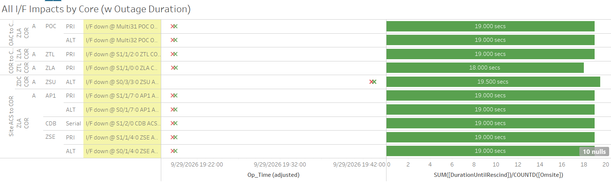

Weekly Highlights 20260923-20260930
SSM-WAAS-065 / DFO-2 Cutover Activities
SSM-WAAS-065 was released on 2/12/26 to upgrade the WAAS subsystems by performing the following hardware changes:
- Remove Legacy PCUs / Replace with new Power Distribution Units (PDUs) and DC Power Supplies (DCPS)
- Remove Legacy KVMs / Replace with new form-fit-function KVM
The DFO-2 Field Test Activities to implement limited operational capability (LOC) of L5 messaging are also being scheduled.
DFO-2 activities will be delayed...
- 9/29 14:59 - SSM-WAAS-065 - MTP
all WREs to Maintenance and Shutdown for upgrade
to W7.442L; all PDUs showed high input voltage
~126 volts (near upper threshhold; will run to
fail); WREs A and C restored to Normal
at 9/29 18:07
- Determined ACS-B router switch card was non-functional during upgrade; removed and replaced with spare; WRE-B restored to Normal at 9/29 19:51
- MTP WRE-B - 11/18/24-9/29/26... - Receiver inits failing due to no DC Power from PCU; PCU swapped with PCU-A after PCU-A failed -- ref LIR 898330924
2 WRS sites remain
| Target Cutover Date | Site | Site Type | Outage? (Y/N) |
|---|---|---|---|
| 9/29/2026 | MTP - Tapachula | WRS5 | Y |
| 10/1/2026 | MPR - Puerto Vallarta | WRS5 | Y |
| 10/6/2026 | MSD - San Jose Del Cabo | WRS5 | Y |
- We will not take an outage at some WRS sites to avoid service area impacts.
- Beginning coordination to return legacy items from Canada and Mexico...
- Both O&Ms will receive a final software-only update to W7.442L on 10/8/26 that will remove PCU related code.
- After the O&M Upgrades are complete, we will kick off the 2-week post-mod monitoring period from 10/8-10/22
| Site | Site Type | Upgrade Start | Upgrade Complete |
|---|---|---|---|
| POC - San Diego TRACON | OM | 2/19/2026 18:54 | 2/19/2026 21:28 |
| ZTL - Atlanta ARTCC | WMS / WCN | 2/19/2026 22:05 | 2/20/2026 2:02 |
| ZLA - Los Angeles ARTCC | WMS / WCN | 2/24/2026 16:24 | 2/24/2026 19:56 |
| ZDC - Washington, D.C. ARTCC | WMS / WCN | 2/26/2026 14:04 | 2/26/2026 19:26 |
| ZAU - Chicago ARTCC | WCN | 3/3/2026 14:15 | 3/3/2026 16:22 |
| NOC - Warrenton ATCSCC | OM | 3/3/2026 16:47 | 3/3/2026 19:21 |
| SZ1 - Santa Paula | SGS | 3/4/2026 17:08 | 3/4/2026 20:59 |
| CM1 - South Mountain | SGS | 3/5/2026 16:45 | 3/6/2026 3:04 |
| AP1 - Napa | SGS | 3/10/2026 15:15 | 3/10/2026 18:27 |
| DX1 - Southbury | SGS | 3/12/2026 13:06 | 3/12/2026 18:33 |
| BR1 - Brewster (S97A) | SGS | 3/25/2026 16:03 | 3/25/2026 21:46 |
| BR2 - Brewster (S97B) | SGS | 3/26/2026 15:54 | 3/26/2026 21:09 |
| ZOA - Oakland ARTCC | WRS2 | 3/31/2026 16:31 | 4/2/2026 18:00 |
| ZMA - Miami ARTCC | WRS2 | 4/2/2026 0:17 | 4/2/2026 5:45 |
| ZLA - Los Angeles ARTCC | WRS2 | 4/14/2026 15:39 | 4/14/2026 20:35 |
| ZNY - New York City ARTCC | WRS2 | 4/15/2026 13:20 | 4/15/2026 17:23 |
| ZFW - Fort Worth ARTCC | WRS2 | 4/23/2026 17:52 | 4/23/2026 22:22 |
| ZBW - Boston ARTCC | WRS2 | 4/28/2026 12:56 | 4/28/2026 19:47 |
| ZAB - Albuquerque ARTCC | WRS2 | 4/29/2026 13:55 | 4/29/2026 18:11 |
| ZMP - Minneapolis ARTCC | WRS2 | 5/6/2026 13:39 | 5/6/2026 18:13 |
| ZSU - San Juan CERAP | WRS2 | 5/12/2026 12:59 | 5/14/2026 14:29 |
| ZHU - Houston ARTCC | WRS2 | 5/27/2026 13:45 | 5/27/2026 17:00 |
| ZAN - Anchorage ARTCC | WRS2 | 5/28/2026 16:43 | 5/28/2026 21:02 |
| ZSE - Seattle ARTCC | WRS2 | 6/2/2026 15:26 | 6/2/2026 18:28 |
| ZKC - Kanas City ARTCC | WRS2 | 6/9/2026 14:05 | 6/9/2026 18:43 |
| ZAU - Chicago ARTCC | WRS2 | 6/10/2026 13:31 | 6/10/2026 17:20 |
| ZJX - Jacksonville ARTCC | WRS2 | 6/16/2026 13:47 | 6/16/2026 19:27 |
| ZOB - Cleveland ARTCC | WRS2 | 6/17/2026 13:40 | 6/17/2026 16:25 |
| OTZ - Kotzebue FSS | WRS5 | 6/23/2026 18:43 | 6/23/2026 20:56 |
| JNU - Juneau AFSS | WRS2 | 6/26/2026 17:02 | 6/26/2026 19:26 |
| ZLC - Salt Lake City ARTCC | WRS2 | 6/30/2026 15:45 | 6/30/2026 18:38 |
| ZDC - Washington, D.C. ARTCC | WRS2 | 7/7/2026 13:38 | 7/7/2026 19:06 |
| ZME - Memphis ARTCC | WRS2 | 7/14/2026 15:03 | 7/14/2026 20:51 |
| YQX - Gander | WRS5 | 7/17/2026 12:02 | 7/17/2026 16:22 |
| YYR - Goosebay | WRS5 | 7/21/2026 13:00 | 7/21/2026 16:17 |
| YFB - Iqaluit | WRS5 | 8/5/2026 01:48 | 8/5/2026 07:22 |
| CDB - Cold Bay FSS | WRS2 | 8/11/2026 17:08 | 8/13/2026 21:42 |
| MMX - Mexico City | WRS5 | 8/13/2026 18:23 | 8/13/2026 22:29 |
| MMD - Merida | WRS5 | 8/18/2026 16:08 | 8/18/2026 20:29 |
| BET - Bethel FCT | WRS5 | 8/18/2026 17:47 | 8/19/2026 00:54 |
| ZTL - Atlanta ARTCC | WRS2 | 8/19/2026 15:47 | 8/19/2026 20:31 |
| FAI - Fairbanks AFSS | WRS5 | 8/21/2026 17:18 | 8/21/2026 21:22 |
| BIL - Billings TRACON | WRS5 | 8/25/2026 15:02 | 8/25/2026 21:02 |
| ZDV - Denver ARTCC | WRS5 | 8/26/2026 15:23 | 8/26/2026 20:43 |
| BRW - Barrow FSS | WRS5 | 9/1/2026 18:03 | 9/1/2026 21:36 |
| HNL - Honolulu AFSS | WRS2 | 9/16/2026 20:10 | 9/18/2026 20:07 |
9/22 - YWG Power Work
- 9/22 04:49 - YWG WRE-C to Maintenance and Shutdown for power work -- ref LIR 1212755524; restored to Normal at 9/22 07:48
9/22 - YFB Satcom Antenna Re-Alignment
- 9/22 13:51 - YFB Ring 2 comms down hard;
Satellite Change || SES-2 23C to SES-1 15C; due to a planning/scheduling error, that South Mountain Teleport is unable to complete the HUB side change until 23 Sept 2026 8am EST-- ref LIR 1200555824; line cleared at 9/23 13:00 (~83335 seconds) - 9/23 13:14 - YFB Ring 2 comms down hard to complete satellite change cleanup work; line cleared at 9/23 13:34 (~1238 seconds)
- 9/23 14:24 - YFB Ring 1 comms down hard for satcom re-alignment; line cleared at 9/23 16:50 (~8779 seconds)
9/23 - MTP Power Loss
- 9/23 18:00 - MTP WRE-A power loss; returned to Maintenance at 9/23 18:11 with PCU alarms SE 4 Alarm condition 4 detected and reset after ~10 seconds and AC9 unexpected state lingering...
- 9/24 13:52 - MTP WRE-A restored to Normal
9/25, 9/28 - ZTL GPS Clock + WRE-C Interference
- 9/25 18:21 - ZTL GPS Clock alarmed with SE 202 Not Time Locked concurrent with SE 728 Subframe Reasonability for ZTL WRE-C; SE cleared at 9/25 18:34
- 9/28 18:11 - ZTL GPS Clock alarmed with SE 202 Not Time Locked and SE 200 GPS Clock Reception Problem; SE cleared at 9/28 18:21
- 9/30 19:14 - ZTL GPS Clock alarmed with SE 202 Not Time Locked and SE 201 Err greater than accuracy; SEs cleared at 9/30 20:01
9/26 - YYR WRE-A Bias Error
- 9/26 05:26 - YYR WRE-A alarmed with SE 729 WRE Bias for all C&Vs
- 9/26 06:09 - YYR WRE-A to Maintenance and Restarted to address WRE Bias alarm; restored to Normal at 9/26 06:21
9/27 - YWG WRE-B Power Work
- 9/27 02:15 - YWG WRE-B to Maintenance and Shutdown for power work -- ref LIR 1214173524; restored to Normal at 9/27 13:52
9/28 - YWG WRE-B Minor Alarm
- 9/28 12:32 - YWG WRE-B alarmed with recurring SE 30 Minor Alarm for Freq Std; last event cleared at 9/28 14:34
- 9/29 02:58 - YWG WRE-B alarmed with recurring SE 30 Minor Alarm for Freq Std; last event cleared at 9/29 04:23
9/29 - ZNY WRE-C Power Work
- 9/29 03:58 - ZNY WRE-C power loss due to scheduled power work; not coordinated with Operators in advance -- ref LIR 1215248224; restored to Normal at 9/29 06:01
9/29 - HNL WRE-C Fault
- 9/29 05:23 - HNL WRE-C Faulted with SEs 52,53,59; Control Powered and restored to Normal at 9/29 07:25
9/29 - YFB Subframe Reasonability
- 9/29 15:51 - YFB all WREs alarmed with SE 728 Subframe Reasonability for all C&Vs -- PID WRS Down
9/29 - BR2 GUS Maintenance
- 9/29 15:59 - BR2 GUS to Maintenance for
semi-annual RFU maintenance-- ref LIR 1177776624; restored to Backup at 9/29 19:51
9/30 - YWG WRE-B Power Work
- 9/30 05:26 - YWG WRE-B to Maintenance and Shutdown for power work -- ref LIR 1215774624; restored to Normal at 9/30 09:01
Various Comm Impacts
* Only captures major / long-term comm outages
YYR Comms
- 9/23 16:56 - YYR Ring 2 comms flapping; last event cleared at 9/23 18:04 (~514 seconds total)
- 9/23 18:42 - YYR Ring 2 comms flapping; last event cleared at 9/23 18:56 (~650 seconds total)
- 9/23 19:44 - YYR Ring 2 comms flapping; last event cleared at 9/23 19:57 (~280 seconds total)
- 9/24 07:33 - YYR Ring 2 comms flapping; last event cleared at 9/24 14:13 (~8642 seconds total)
- 9/25 05:50 - YYR Ring 2 comms flapping; last event cleared at 9/25 06:14 (~1096 seconds total)
- 9/25 06:25 - YYR Ring 2 comms flapping; last event cleared at 9/25 07:01 (~264 seconds total)
- 9/25 09:05 - YYR Ring 2 comms flapping; down hard at 9/25 11:09; line cleared at 9/25 11:26 (~6077 seconds total)
- 9/25 12:59 - YYR Ring 2 comms down hard; line cleared 9/25 13:17 (~1074 seconds)
Other Sites
- 9/23 10:24 - HNL Ring 1 ALT / Ring 2 PRI comms down hard; both lines cleared at 9/23 14:44 (~15610 seconds)
- 9/23 10:36 - CDB Ring 1 comms down hard; line cleared at 9/23 10:42 (~406 seconds)
- 9/24 18:36 - CDB Ring 1 comms flapping; last event cleared at 9/24 19:12 (~842 seconds total)
- 9/24 19:57 - YQX Ring 2 PRI comms down hard; line cleared at 9/24 22:54 (~10582 seconds)
- 9/24 20:34 - CDB Ring 1 comms flapping; line cleared at 9/24 20:44 (~579 seconds)
- 9/25 16:44 - DX1 Ring 1 ALT comms down hard; line cleared at 9/25 17:34 (~2957 seconds)
- 9/25 17:05 - DX1 Ring 2 PRI comms down hard; line cleared at 9/25 17:11 (~362 seconds)
- 9/25 19:02 - HNL Ring 1 PRI / Ring 2 ALT comms down hard; both lines cleared at 9/26 05:28 (~37581 seconds)
- 9/28 08:02 - YWG Ring 1 PRI / Ring 2 ALT comms down hard; both lines cleared at 9/28 08:12 (~629 seconds)
- 9/28 08:31 - YWG Ring 1 PRI / Ring 2 ALT comms down hard; both lines cleared at 9/28 08:48 (~1039 seconds)
- 9/29 19:19 - Multiple comms impacted at ZLA COR-A; all lines cleared after ~20 seconds

- 9/30 16:55 - CM1 Ring 1 PRI / Ring 2 ALT comms flapping; last events cleared at 9/30 17:11 (~91 seconds total)
8/13 BRW Ring 1 ALT / Ring 2 PRI Comms
- 8/13 10:57 - BRW Ring 1 ALT / Ring 2 PRI
comms flapping...
- 8/13 17:49 - BRW Ring 1 ALT comms down hard -- ref LIR 1472365532...
- 8/14 00:32 - BRW Ring 2 PRI comms down hard -- ref LIR 1472364732...
- 9/2 02:08 - BRW Ring 2 PRI comms came back up to flapping (~1.6 million seconds; down since 8/14); down hard again at 9/2 12:49...
- 9/2 03:24 - BRW Ring 1 ALT comms came back up to flapping (~1.6 million seconds; down since 8/13)...
- 9/16 16:46 - BRW Ring 1 ALT comms came back up to flapping (~984510 seconds, down since 9/5); line back down hard at 9/16 17:14...
- 9/16 17:51 - BRW Ring 1 ALT comms came back up to flapping; line back down hard at 9/19 02:06...
- 9/16 19:33 - BRW Ring 2 PRI comms came back up to flapping (~1.2 million seconds, down since 9/2); line back down hard at 9/16 19:52...
5/11/23 Mexico Ring 2 Down Hard...
- 5/11/23 17:01 - MX Ring 2 SatCom upgrade begins; MX Ring 2 OFFLINE until upgrade troubleshooting is complete...
- Targeting network upgrade in CY26
- 3/12/26 Disconnect order
List of current offline WREs
List of current offline WREs -- ref WAAS Status Monitor
All Depot shipments to Mexico are halted until the customs process can be finalized
Currently working to assess MX Inventory to determine equipment refresh and restoration needs...
ZSU
- ZSU WRE-B - 9/8/26-... - Freq Std Ionizer Filament out of tolerance -- ref LAD 1496957832...
MMX -- WRS OFFLINE
- MMX WRE-B - 7/29/26-... - MMX WRE-B to Maintenance to monitor site RFI -- ref LAD 1456891832
- MMX WRE-C - 8/21/26-... - keeping MMX at one thread while investigating RFI -- ref LIR 1189462124...
MMD -- WRS OFFLINE
- MMD WRE-B - 8/18/26-... - Freq Std failed during SSM-WAAS-065 upgrade...
- MMD WRE-C - 10/20/25-... - Good Freq Std swapped into WRE-A to restore -- ref LIR 211505621
MPR
- MPR WRE-B - 5/3/24-... - Inits failing -- looks like a bad freq std; due to shipping issues, there is no spare Freq Std and no ETA to recover WRE-B... -- ref LIR 44170821

Major Events


Core I/F Status

Comm Events

Mexico Comm Status